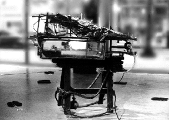

Jason Challas
Jason Challas
Holmes Fine Arts Gallery
Feb. 11th- April 28th
89 South 1st St. San Jose, California
Currents is an important show for technological art which is all-in-all under-represented in Silicon Valley. Spanning the gamut from narrative imagery to computer manipulated photo collage to electronic sculpture and installation, Currents offers a wide range of what can and should be regarded as "computer art."
It is an eclectic collection of work in that there is no obvious particular aesthetic bias or cohesive curatorial concept, but instead offers a wide range of examples of artists working with computers and electronics. Both walls along the length of the gallery are comfortably filled with two-dimensional works, sculptural pieces, and monitors regularly poking out from the walls.
Noticeable among the works are those that interact with the viewer. Bruce Cannon's interactive piece, Donation Box, spits back loose change deposited in it (as it yells "cheapskate!") and gladly gobbles up dollar bills, saying "Thank You" in a satisfied tone. Cannon's Comfort Zone is a wall piece which consists of a 2'x2'x2" block of diamond plate metal. A sensor, mounted off-center in the upper part of the plate, detects your presence as you approach. It utters responses at you based on your distance from it. Casually walking by at around ten feet might elicit "chicken!" as a reaction. The closer you get the warmer and more inviting its espousals until it becomes 'crowded' and lets you know.
The context of this show presents difficulties for the success of Comfort Zone, one of the nicer pieces. Hung on the wall in an ideal spot at about the center of the room, the sensor can catch unwitting passers-by as they wander into range. However, because it is a wide open, uncontrolled environment, the cause and effect of the viewer's actions upon the sensor get muddled. It is poorly placed (albeit necessary for logistical reasons of the gallery shape) for coherent interaction. It is almost impossible to tell what effect (if any at all) you are having upon it if there is anyone else within proximity when viewing the work. Without spending a fair amount of time with it you wouldn't know that it was capable of more than the one or two utterances you first caught.
Tim Ryan's work in the back room Father Structure, resembles a large sawhorse mounted with a slide projector that reciprocates back and forth along its track, revealing an image which changes from a baby to a man. This is perhaps Ryan's most developed piece aesthetically and conceptually. His other wall sculpture, Fill II, involves a fan and an air chamber that seems to be only about the ability of this little 'muffin' fan to fill the box with hot air -- not nearly as exciting visually or mechanically as his other work.

Ryan's large constructed relief paintings stay within the same aesthetic range as his sinewy wooden stick and horse-glue-type 3-D constructions. However, Magellanic Structure and Oceanic Devise lack the developed quality of his mechanical sculptures. His sculptural work is interesting to watch, but their natural materials and the animalistic qualities of the joints and ligaments seem to beg a discussion of natural vs. manufactured animals. He doesn't push the envelope of this exploration far enough in that direction.
The show also includes work by Joan Heemskerk, Dirk Paesmans, Joel Slayton, Jack Fulton, Gary Quinonez, Guy Marsden, Christine Tamblyn, Geri Wittig, Joe Delappe, and a few others. Blending the work of 'veterans' in the field with those of a newer generation, it showcases some historically important but under-publicized artists in this blooming field.